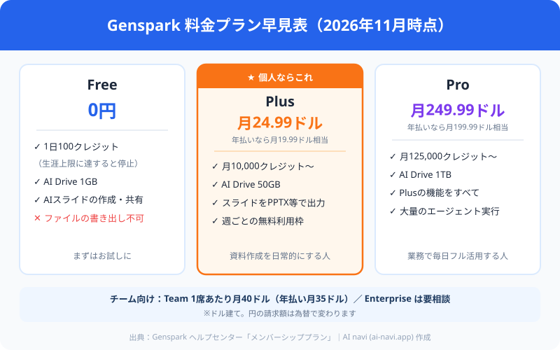

Gensparkとは？検索AIから「仕事を任せるAI」へ
Gensparkは、もともと「AI検索エンジン」として知られていたサービスです。現在は検索だけでなく、依頼された作業をAIが自分で段取りして進めるエージェント型のワークスペースへと広がっています。
中心にあるのがスーパーエージェントです。公式ガイドの説明では、入力欄に依頼を書くと、AIがタスクを分解して検索・分析・成果物づくりまでを連続で実行します。たとえば「来月の社内勉強会用に、生成AIの最新動向を10枚のスライドにまとめて」と頼むと、情報収集からスライドの構成・原稿・デザインまでを一気に進める、という使い方を想定しています。
同じ画面から、スライド専用のAIスライド、表計算のAIシート、文書作成のAIドキュメント、アプリやページを作るAIデベロッパー（Genspark Code）、電話をかける通話エージェントなども呼び出せます。「検索してから別のツールでまとめる」という往復を減らしたい人向けのサービスと考えるとわかりやすいでしょう。
Gensparkの登録手順（無料・3ステップ）
Gensparkはブラウザで使うサービスで、パソコンならアプリのインストールは不要です。無料プランから始められます。
- 公式サイト（genspark.ai）を開く：右上の「サインイン」またはトップの入力欄から始めます。
- ログイン方法を選ぶ：Google・Microsoft・Apple・メールアドレスから選べます。新規登録とログインは同じ画面です。
- ホーム画面の入力欄に依頼を書く：日本語でそのまま入力すれば、内容に応じて適した機能に振り分けられます。
登録時の注意
- 公式ガイドによると、Googleアカウントで作成した場合はあとからパスワードを設定できません。ログイン方法は1つに決めておくと迷いません。
- 無料クレジットはアカウント単位です。複数アカウントで無料枠を増やす使い方は、規約違反になるおそれがあるので避けましょう。
基本の使い方：スーパーエージェントに依頼する
最初は「スーパーエージェント」に依頼するのがいちばん簡単です。うまく使うコツは、目的・読み手・形式の3つを1回の依頼に入れることです。
| 悪い依頼 | 伝わる依頼 |
|---|---|
| 生成AIについて調べて | 中小企業の経営者向けに、2026年の生成AIの業務活用事例を5つ調べ、出典付きで表にまとめて |
| スライドを作って | 新入社員研修用に「情報セキュリティの基本」を8枚のスライドにして。専門用語には一言で説明を添えて |
| 競合を分析して | 市内のカフェ3店の価格帯・営業時間・SNSの有無を表にして、空いている市場を一言でまとめて |
依頼を送ると、エージェントは作業計画を立てて検索や整理を進めます。途中経過が表示されるので、方向がずれていたら追加の指示で修正できます。完成後も「3枚目をもっと短く」「表に価格の列を足して」のように会話で直せます。
なお、エージェントは処理が長くなるほどクレジットを多く使います。無料版で試すときは、小さめの依頼から始めて消費量の感覚をつかむのがおすすめです。
Gensparkの主な機能と使いどころ
2026年11月時点で、公式ヘルプのプラン表に載っている主な機能は次のとおりです。
| 機能 | できること | こんな場面に |
|---|---|---|
| スーパーエージェント | 依頼を分解し、検索・分析・成果物作成まで自動で進める | 調べものから資料化まで一気に済ませたい |
| AIスライド | テーマを入れると構成・原稿・デザインを自動生成。有料版はPDF・PPTX等で書き出し | 会議資料、研修資料、提案書のたたき台 |
| AIシート | 表形式のデータ作成・整理 | 競合比較表、リスト作成 |
| AIドキュメント | レポートや文書の作成 | 調査レポート、マニュアルの下書き |
| AIデベロッパー（Genspark Code） | ファイルやページの作成。有料版はGenspark Hostingで公開 | 簡単なWebページの試作 |
| 通話エージェント | AIが電話をかける。無料版は自分の番号へのテスト通話1回まで | 予約・問い合わせの代行（有料） |
| AI Drive | 作ったファイルの保存。Free 1GB／Plus 50GB／Pro 1TB | 成果物の保管 |
特に使いどころが多いのはAIスライドです。公式の作り方ガイドでは、ホーム画面から「AIスライド」を開いてテーマを入力する方法と、スーパーエージェントに「スライドにして」と頼む方法の2通りが紹介されています。ただしFreeプランでは作成・プレゼン・リンク共有までで、PowerPointなどへの書き出しは有料プランの機能です。
スライドAIを比べて選びたい方は「AIプレゼン資料作成ツール比較」もあわせて読んでみてください。
【PR】MiriCanvas｜作った資料をデザインで仕上げる
Gensparkで集めた情報を、SNS画像・チラシ・バナーなどに仕上げたいときはテンプレートが豊富なMiriCanvasが便利です。無料で始められます。
MiriCanvasを無料で試す →※広告を含みます
無料枠と料金プラン（2026年11月時点）

Gensparkはクレジット制です。検索やエージェントの実行、スライド生成などでクレジットを消費します。公式ヘルプセンター「メンバーシッププラン」に載っている内容を表にしました。
| プラン | 料金（月払い） | 年払い時 | クレジット | AI Drive |
|---|---|---|---|---|
| Free | 0円 | — | 1日100（生涯上限まで） | 1GB |
| Plus | 月24.99ドル | 月19.99ドル相当（年239.99ドル） | 月10,000〜 | 50GB |
| Pro | 月249.99ドル | 月199.99ドル相当（年2,399.99ドル） | 月125,000〜 | 1TB |
| Team | 1席 月40ドル | 1席 月35ドル相当 | 1席 月10,000 | — |
円に直すと、1ドル150円換算でPlusが月約3,750円、Proが月約37,500円です。ドル建てのため、実際の請求額は為替で変わります。ChatGPT Plus（月3,000円前後）よりやや高い位置づけです。
無料プランの注意点
- 無料クレジットには生涯上限がある：毎日100クレジットが補充されますが、累計の上限に達すると補充が止まります。上限の具体的な数値は公式ヘルプに書かれていません。
- ファイルのダウンロード・エクスポートは有料：スライドをPPTXやPDFで持ち出すにはPlus以上が必要です。
- 高コストのモデルは使いにくい：AIデベロッパーでは、残高が500クレジット未満だと高コストモデルが選べない仕様です。
有料プランの期間限定の特典
公式ヘルプでは、2026年9月18日より前にPlus・Proを始めて継続しているメンバーは、AIチャットとAI画像の無制限利用が2026年12月31日まで続くと案内されています。また、Plus・ProにはStandardモードで使える週ごとの無料利用枠があります。2027年1月以降はその時点のプラン規約が適用されるため、契約前に最新の条件を確認してください。
Gensparkは料金や特典の変更が多いサービスです。この記事の数字は2026年11月時点のもの。契約前には必ず公式ヘルプのプラン表を見てくださいね。
Gensparkでできること・できないこと
できること
- 日本語の依頼から、調査・整理・資料化までを一続きで進める
- スライド・表・文書・簡単なWebページの作成
- 作った資料のリンク共有（無料版でも可）
- 有料版でPPTXなどへの書き出し、Webページの公開
できない・苦手なこと
- 無料版でのファイル書き出し
- 回答や数字の正確さの保証（出典の確認は必須）
- クレジット消費量の事前把握（依頼内容で変わる）
- 無料のまま長期間使い続けること（生涯上限あり）
エージェントが集めた情報には、古いページや誤った数字が混じることがあります。社外に出す資料は、出典リンクを開いて数字を確かめてから使うのが基本です。
Perplexity・ChatGPTとの違い
GensparkはよくPerplexityと比べられますが、いまは得意分野がかなり違います。
| 項目 | Genspark | Perplexity | ChatGPT |
|---|---|---|---|
| 中心になる使い方 | エージェントに作業を任せる | 出典付きで調べる | 会話で相談・文章作成 |
| 成果物 | スライド・表・文書・ページ | 回答・リサーチレポート | 文章・画像・ファイル |
| 無料版 | 1日100クレジット（生涯上限あり） | 通常検索は無制限 | 回数制限つきで利用可 |
| 個人向け有料プラン | Plus 月24.99ドル | Pro 月20ドル（約3,000円） | Plus 月3,000円前後 |
- 答えをすぐ知りたい・出典を確かめたい → Perplexity
- 調べた内容をスライドや表にまとめたい → Genspark
- 文章の推敲や相談をしながら進めたい → ChatGPT
同じAI検索系では、多言語の情報をまとめるのが得意なFeloもあります。違いは「Feloの使い方ガイド」で整理しています。ほかの無料ツールも比べたい方は「無料AIツールおすすめ20選」をどうぞ。
よくある質問
まとめ
Gensparkは、検索・整理・資料化を1つの画面で済ませたい人に向いたAIエージェントです。
- 登録はGoogle・Microsoft・Apple・メールから。ブラウザですぐ使える
- 無料版は1日100クレジット。ただし生涯上限があり、ファイル書き出しは不可
- 本格利用ならPlus（月24.99ドル、年払いで月19.99ドル相当）が基本
- 出典付きの調べものはPerplexity、資料まで任せるならGensparkと使い分ける
まずは無料版で小さな依頼を出し、クレジットの減り方と仕上がりを見てから有料プランを考えるのが失敗しない順番です。
参考：
Genspark ヘルプセンター「メンバーシッププラン」
Genspark公式ブログ「Gensparkの使い方ガイド」
Genspark公式ブログ「スーパーエージェントとは？」
Genspark公式ブログ「GensparkでAIスライド・プレゼン資料を作る方法」
※料金・機能は2026年11月時点の情報です。最新情報は公式サイトでご確認ください。